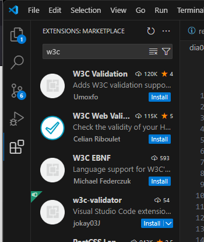

A la hora de programar con HTML se pueden cometer diferentes tipos de erroes:
Los errores de sintaxis se pueden comprobar con un validador HTML.
El validador W3C también permite validar CSS, además que se pueden buscar extensiones para Visual Studio Code e incluso para la terminal
Los errores encontrados en el día 01 fueron que no cerraba correctamente el mayor que y menor que, este error se va a repetir en el 02 y 03.
Me avisó que tenía un elemento pre dentro de una lista, lo cual no debería ser
Pista de Manz